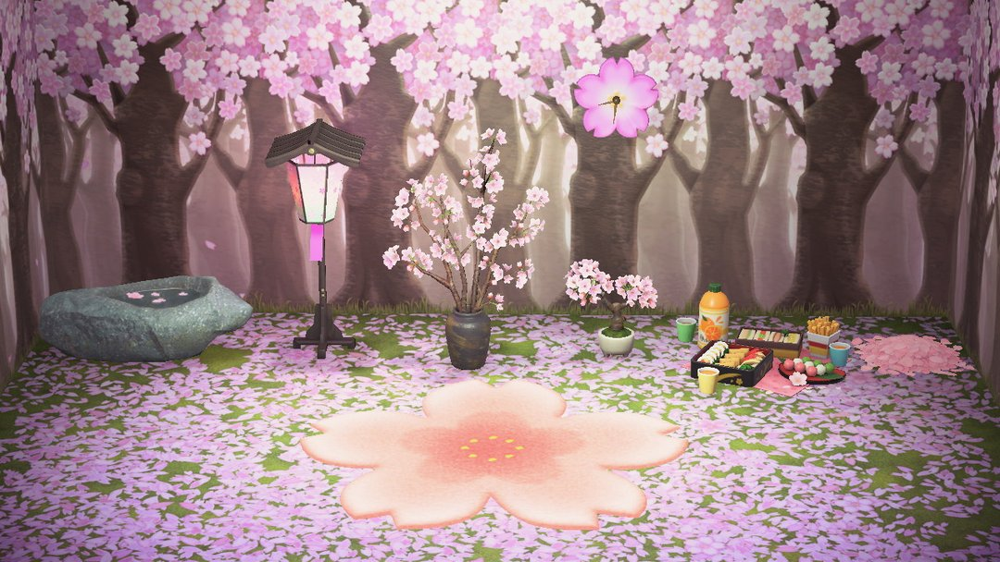

櫻花季：4 月 1 日到 10 日，用捕蟲網撈花瓣
一年只有 10 天：花瓣怎麼撈、DIY方程式怎麼學，15 份櫻花家具的材料一張表
櫻花季是材料季裡最短的兩個之一（另一個是楓葉季）：北半球 4 月 1 日到 10 日，南半球 10 月 1 日到 10 日。這幾天島上的闊葉樹開滿粉紅色的花，花瓣在半空中飄，揮捕蟲網撈下來，就是櫻花花瓣。
櫻花花瓣能做 15 份DIY：賞花組合、櫻花盆栽、櫻花樹牆、櫻花雨傘……全做一遍要 95 片花瓣。10 天一過就得等明年，這幾天最好每天都上島繞一圈，花瓣多撈一些存起來。

櫻花季裡，島上的樹開成一片粉紅色（圖：Nookipedia）
01哪 10 天
日期以遊戲裡的時間為準，南半球比北半球晚半年。
| 半球 | 開始 | 結束 |
| 北半球 | 4 月 1 日 | 4 月 10 日 |
| 南半球 | 10 月 1 日 | 10 月 10 日 |
遊戲裡的一天從早上 5 點算起，所以第 10 天的深夜，一直到隔天早上 5 點前，都還算櫻花季，最後一晚還能再撈一會兒。
櫻花季整個落在春筍季裡面，這 10 天春筍也照樣能砍。北半球的復活節有些年份會和櫻花季撞期，那幾天射下的氣球裡，會混著復活節的DIY方程式。
02花瓣怎麼撈
櫻花花瓣在空中慢慢飄，跟抓蟲一樣，拿著捕蟲網對準揮過去就行。一片賣 200 鈴錢，賣掉不值得，留著做家具。
花瓣在口袋裡一格只能疊 10 片，撈沒多久口袋就滿了。隨手放進收納，口袋空出來再繼續撈。
小提示櫻花花瓣能放進收納。季節快結束時多存一些收起來，過了季也能繼續做；這一季的DIY方程式沒學全也沒關係，以後學到了再拿出來用。
03DIY方程式從哪來
10 天裡要學 15 份，時間很緊，三個來源都要用上。
最主要的是射氣球。櫻花季裡飄過的氣球，射下來會掉這一季的DIY方程式，一直掉到你把這一季的學全為止。這 10 天看到氣球就追上去射。
其次是第一天去服務處。北半球 4 月 1 日、南半球 10 月 1 日，狸克或西施惠會送你一份「賞花組合」。只有第一天送，那天別忘了去。
第三個是航平的遊船，見下面。
錯過了：搭航平的船去補
碼頭的航平每天能載你出海一次，收 1,000 Nook哩數。偶爾會開到停在某個季節的島上，櫻花盛開的島就是其中一種，每種季節島的機率大約 3%。到了那座島，能撈到櫻花花瓣，海邊的瓶中信裡也可能裝著櫻花的DIY方程式。櫻花季只有 10 天，這條路對補方程式很有用。
機率不高，只能算碰運氣。還有一個前提：你自己的島上得先經歷過這個季節，才可能被帶到對應的島。把旅館第一間 VIP 客房布置好以後，航平每天還能多跑一趟（收 100 旅館券），遇到的機會也多一點。
0415 份DIY方程式一覽
| DIY方程式 | 材料 |
| 賞花組合 季節第一天服務處送 | 櫻花花瓣 10 |
| 賞花提燈 | 櫻花花瓣 6、硬木材 4 |
| 櫻花盆栽 | 櫻花花瓣 6、硬木材 2、雜草 3、黏土 3 |
| 櫻花樹枝 | 櫻花花瓣 8、樹枝 4、黏土 5 |
| 櫻花時鐘 | 櫻花花瓣 5、鐵礦石 1 |
| 櫻花花瓣堆 | 櫻花花瓣 5 |
| 石水盆～櫻花～ | 石頭 10、櫻花花瓣 3 |
| 櫻花樹牆 | 櫻花花瓣 10、硬木材 5 |
| 櫻花木牆 | 櫻花花瓣 5、木材 10 |
| 櫻花木地板 | 櫻花花瓣 5、木材 10 |
| 櫻花地板 | 櫻花花瓣 10、雜草 20 |
| 櫻花地毯 2.0 加入 | 櫻花花瓣 6 |
| 櫻花側背包 | 櫻花花瓣 6 |
| 櫻花雨傘 | 櫻花花瓣 7 |
| 櫻花棒 | 櫻花花瓣 3、星星碎片 3 |
15 份全做一遍，一共要櫻花花瓣 95 片，另外還要雜草 23、木材 20、硬木材 11、石頭 10、黏土 8、樹枝 4、星星碎片 3、鐵礦石 1。
05先做哪幾件
賞花組合：第一天送的那份，一塊野餐墊擺著便當，10 片花瓣就能做，往櫻花樹下一放就是賞花現場。
櫻花樹牆、櫻花木地板、櫻花地板：想把一間屋子布置成櫻花主題，牆面和地板這幾樣最顯眼。櫻花樹牆、櫻花地板各要 10 片花瓣，是這一季最耗花瓣的。
櫻花雨傘、櫻花側背包：拿在手上、背在身上的小東西，花瓣 6、7 片就夠，春天拍照很好用。
櫻花棒：這一季的魔法棒，揮一下能換上登記好的整套衣服。
賞花提燈和櫻花時鐘做出來以後還能改造換顏色。

櫻花系列家具布置的房間（圖：Nookipedia）
小提示花瓣不夠 95 片的話，先做手邊已經學會、又最想要的幾件，剩下的花瓣收起來。明年再學到別的DIY方程式時，今年存的花瓣照樣能用。
06版本變化
櫻花地毯這份DIY方程式是 2.0 加入的。航平出海是 2.0 加入的；布置好旅館第一間 VIP 客房後航平每天多跑一趟，是 3.0 加入的。
動森圈圈 · iOS App 和微信小程式都搜「動森圈圈」